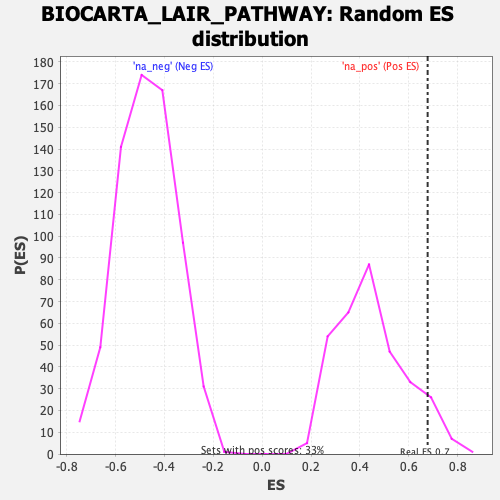

| | | Dataset | DE_genes |
| Phenotype | NoPhenotypeAvailable |
| Upregulated in class | na_pos |
| GeneSet | BIOCARTA_LAIR_PATHWAY |
| Enrichment Score (ES) | 0.6773662 |
| Normalized Enrichment Score (NES) | 1.5111742 |
| Nominal p-value | 0.05230769 |
| FDR q-value | 0.4260098 |
| FWER p-Value | 0.995 |
Table: GSEA Results Summary
 Fig 1: Enrichment plot: BIOCARTA_LAIR_PATHWAY
Fig 1: Enrichment plot: BIOCARTA_LAIR_PATHWAY
Profile of the Running ES Score & Positions of GeneSet Members on the Rank Ordered List
| PROBE | GENE SYMBOL | GENE_TITLE | RANK IN GENE LIST | RANK METRIC SCORE | RUNNING ES | CORE ENRICHMENT | | 1 | TNF | | | 104 | 6.046 | 0.3291 | Yes |
| 2 | C6 | | | 245 | 3.321 | 0.5045 | Yes |
| 3 | IL1A | | | 261 | 3.130 | 0.6774 | Yes |
| 4 | C3 | | | 1577 | 0.480 | 0.6190 | No |
| 5 | VCAM1 | | | 1695 | 0.435 | 0.6355 | No |
| 6 | ICAM1 | | | 2366 | 0.229 | 0.6049 | No |
| 7 | ITGB2 | | | 3683 | 0.088 | 0.5246 | No |
| 8 | C7 | | | 4627 | 0.035 | 0.4656 | No |
| 9 | ITGAL | | | 5967 | -0.037 | 0.3810 | No |
| 10 | ITGA4 | | | 7775 | -0.177 | 0.2739 | No |
| 11 | C5 | | | 8664 | -0.270 | 0.2314 | No |
| 12 | IL6 | | | 8782 | -0.284 | 0.2396 | No |
| 13 | SELPLG | | | 12880 | -1.038 | 0.0322 | No |
| 14 | SELP | | | 13256 | -1.156 | 0.0722 | No |
| 15 | ITGB1 | | | 13563 | -1.279 | 0.1234 | No |
Table: GSEA details [plain text format]

Fig 2: BIOCARTA_LAIR_PATHWAY: Random ES distribution
Gene set null distribution of ES for BIOCARTA_LAIR_PATHWAY